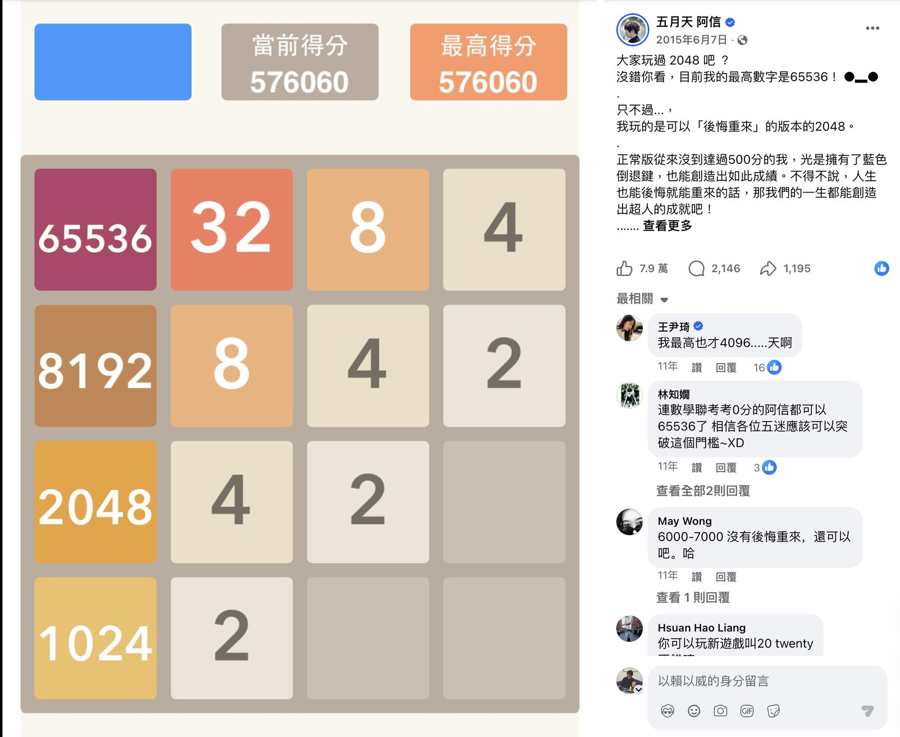

來源：TED-Ed - Exponential growth: How folding paper can get you to the Moon
主檔案：
2_2048_教學流程.md
執行指南：30_教學設計指南.md
對應簡報：簡報/5_2048_L2_簡報.html（頁數依二年級調整後重新製作，尚未產出）
檔名格式：2_2048_教師手冊_第2節.md課程型態：暑期雨備（颱風天）線上限定課程，本節 40 分鐘。
互動分兩種：開場估算用「主房間留言區作答」；兩段 🔵（2-3 玩、2-5 發想）走「breakout 分組房間」——每組約 3–4 人、各組開鏡頭討論／試玩，老師巡房，時間到收回主房間口頭或留言分享。老師端請課前先測網路、螢幕分享，以及 breakout 房間的分派／回收。鎖定項（來自階段一＋二）：節主題、順序、知識點、題材、脈絡表
本階段調整：活動設計、時間分配、教學策略、素材選用、教師手冊內容⚠️ 二年級改版說明：本節原為中高年級版直接複製，2026-07-07 依老師指示重新改寫。2-1 拿掉精確位數（65536、2¹⁶、淘汰賽推算）、2-2 整段換成「連續加法與偶數」（原為次方階梯）、2-4 拿掉英文術語「heuristic」、2-5 的下節預告拿掉黃金比例與維度說法。
⚠️ 三次修訂（同日）：老師決定保留第一節存錢 POE 第 7 天、米粒傳說數到 1024／2048 的戲劇張力，把「認識千的位值」教學改插入第一節 1-4（利用存錢 POE 127 元超過百的時機），本節 2-1 因此還原為原始的 3'（互動估算）＋7'（講述＋影片）結構，只在開場多補一句回扣第一節學過的「千」。
⚠️ 四次修訂（簡報調整階段）：① 2-1 阿信 65536 截圖與數字保留不隱藏——目的是讓孩子看到真實紀錄、知道那是很大的數字即可，不做「需要幾個2≠合幾次」的位數拆解推理；② 2-2「兩個兩個數」統一改為「兩個兩個一數」；③ 2-5 下節變形預告拿掉「貪食蛇版」（該版本因牽涉乘除法對二年級太早，L3 已整段刪除），改為只預告費氏版與立體版兩款。
| 時長 | 教學內容（約 100 字，供共同教師備課） | 分段時間 | 方式 | 備註（材料） |
|---|---|---|---|---|
| 10' | 2-1 開場：有人拼到超大數字 ＋ 摺紙到月球 先讓全班在主房間留言區猜「2048 最高能拼到多大」（選項：2048／比 2048 大一點／大很多／大到想不到）當現場互動，揭曉真實世界紀錄 65536——讓孩子看到真實紀錄、知道是很大的數字，可回扣第一節學過的「千」。最後播《摺紙上月球》關鍵片段，感受翻倍的威力。 |
3' 互動估算 7' 講述＋影片片段 |
互動估算＋影片 | [投影] 世界紀錄／票選／揭曉示意；[播放] 摺紙上月球（AmFMJC45f1Q，只播關鍵 2–3 分鐘片段／或海報選看） |
| 5' | 2-2 連續加法與偶數 發現遊戲裡的數字都是「同一個數加自己」：2+2=4、4+4=8、8+8=16…這叫連續加法；這些數字（2,4,8,16…2048）都是偶數，可以兩個兩個一數。留言互動：「16 翻倍變 32，還是偶數嗎？」 |
5' 講述／互動 | 講述／互動 | [投影] 連續加法＋偶數示意（SVG） |
| 10' | 2-3 大家玩第二次 🔵 學生進 breakout 分組房間，帶著「偶數」的眼光再玩一次原版 2048。先確認操作（電腦用方向鍵、平板手機用手指滑），再計時挑戰拼比上節更高的磚，組內互相報告最大的磚是多少、是不是偶數。 |
10' 分組試玩 | 玩 | [開啟] 原版 2048；計時器 |
| 10' | 2-4 介紹角落的重要訣竅 先講「為什麼會卡住、為什麼大磚不能擺中間」，再依序給三招：① 最大磚釘角落、② 由大到小排成蛇形、③ 少用會推走大磚的方向；進階補「連鎖合併（先忍住再一次引爆）」。最後點出這些招是玩家一起玩出來的好方法。 |
5' 講述 5' 示範／互動 |
講述／互動＋示範 | [投影] 角落／蛇形示意、好 vs 壞盤面對照（SVG）；[開啟] 原版 2048 |
| 5' | 2-5 發想新玩法（含下一節變形預告） 🔵 學生進 breakout 分組房間討論「2048 還能怎麼變？」，老師給三個方向當靈感（換數字規則／換盤面形狀／加新道具），各組想出一個最喜歡的新玩法，回主房間口頭或留言分享。老師順勢用 p25–26 預告下一節兩款變形（費氏版 2584／立體 3D 版）。 |
5' 分組討論 | 分組討論 | [投影] 發想留言牆／三個發想方向；下節變形示意 SVG |
時間統計：講述 22' / 非講述 18'（玩第二次 10' ＋ 發想討論 5' ＋ 開場估算互動 3'）
非講述活動數：3 個（開場估算互動、玩第二次、發想討論）
備註：本節為颱風天線上限定課程（每節 40'），講述比重略高於一般數學實驗課；兩段 🔵 分組（2-3 玩、2-5 發想）共 15' 為核心動手時段，請務必保留。
必教內容：世界紀錄 65536、一直翻倍會變超大、摺紙上月球（可回扣第一節學過的「千」）
背景知識說明（100-150 字）
2048 標準 4×4 盤面的真實最高磚是 65536；五月天阿信就曾在臉書曬出這個紀錄。這裡的目的是讓學生看到真實紀錄、知道「真的有人拼到這麼大的數字」，不需要算出精確位數或教「需要幾個2≠合幾次」的位數拆解推理。學生第一節已經認識過「千」（在 1-4 存錢 POE、1-5 米粒傳說裡都用過），這裡可以順口回扣一句「65536 比千還大很多」，不用重新解釋位值系統。摺紙上月球則是另一個經典翻倍故事：一張紙每對摺一次厚度翻倍，摺了很多很多次之後就能從地球疊到月球，前面幾摺幾乎沒感覺、後面瞬間暴衝——跟 2048 的盤面數字是同一種「越後面越誇張」的感覺。
教學流程（100-150 字）
先丟懸念（p03）當現場互動：「你覺得 2048 全世界最厲害的人最高能拼到多大？把答案打在留言區：1＝2048、2＝比 2048 大一點、3＝大很多、4＝大到想不到。」收幾個答案後揭曉（p04）：「答案是 65536！真的有人拼到這麼大的數字，遠比 2048 大很多倍！還記得上次學的『千』嗎？65536 比千還大很多。翻倍真的很威。」不需要拆解位數、不教「需要幾個2≠合幾次」的推理，讓學生單純驚呼數字之大就好。最後播《摺紙上月球》關鍵片段（p07，只播 2–3 分鐘或看海報）：「猜猜對摺很多次能到月球嗎？跟玩 2048 一樣，前面輕鬆、後面數字大得嚇人。」
簡報素材
對應簡報 p01–07（不另下載新圖；以下為已內含素材）。

▶ 影片：摺紙上月球（翻倍的威力，全長 3:49；課堂只播關鍵 2–3 分鐘片段／或改看海報選看）
來源：TED-Ed - Exponential growth: How folding paper can get you to the Moon
另：p03 投票、p04 揭曉頁皆為簡報內已完成的 inline SVG／純文字版型，課堂直接投影即可。
颱風天 Plan B ⚠️ 連線失靈：①站台連不上→老師單機分享畫面帶全班看＋口頭討論；②影片載不出→用簡報該頁講述帶過、影片改課後自看。
參考資料
必教內容：連續加法（同一個數加自己）、偶數（2 個一數）、遊戲裡的數字都是偶數
背景知識說明（100-150 字）
2048 每一次合併，都是「同一個數加自己」：2+2=4、4+4=8、8+8=16、16+16=32……這種「同一個數字一直加自己」的算法叫連續加法。仔細看這串數字（2,4,8,16,32,64,128,256,512,1024,2048），會發現它們全部都是偶數——偶數就是「可以兩個兩個一數完、不會多出一個」的數字。這正好呼應二年級這學期在學的奇偶數概念：因為每一步都是「偶數＋一樣的偶數」，答案永遠還是偶數。二年級剛升上來還沒學乘法，所以本段完全用加法和「兩個兩個一數」的語言，不出現次方或乘法符號。
教學流程（100-150 字）
先換寫法（p08）：「2+2=4、4+4=8、8+8=16——每一次都是自己加自己，這叫連續加法。」接著帶入偶數（p09）：「把這些數字排出來：2,4,8,16,32,64,128,256,512,1024,2048，你發現了什麼？它們是不是都可以兩個兩個一數完？這種數字就叫偶數！」留言互動：「如果 16 再翻倍變成 32，還是偶數嗎？」收在金句頁（p10）：「2048 遊戲裡出現的每一個數字，都是偶數；因為偶數加偶數，答案還是偶數。」時間緊湊，以投影帶口白為主，可視情況讓 1–2 位學生口頭回答留言互動。
簡報素材
對應簡報 p08–10（不另下載新圖；版型可沿用原簡報排版風格重新製作）。
參考資料
必教內容：帶「偶數」眼光再玩、兩種操作方式（鍵盤方向鍵／手指滑）、組內互相挑戰
背景知識說明（100-150 字）
這是本節第一段分組動手時間。學生在第一節已玩過原版 2048，本段要他們帶著剛學的「偶數」眼光重玩：邊玩邊觀察數字是不是 2、4、8、16 一路翻倍，現在最大的磚是多少、是不是偶數。線上課要照顧不同載具——電腦用鍵盤上下左右方向鍵，盤面就往那個方向靠攏並合併；平板、手機用手指往該方向滑。每滑一步，盤面會冒出一顆新磚（本段不必講機率細節）。本段刻意安排在「角落訣竅」之前，讓學生先親身卡關，下一段的策略才有切身感。
教學流程（100-150 字）
宣布進分組房間（p11）：「等一下一起玩第二次原版 2048，這次帶著我們剛學的眼光去玩，看誰拼得更高。分組時間，十分鐘。」先快速確認操作（p12）：「用電腦就按方向鍵，往哪個方向按、磚就往哪邊靠；用平板手機就用手指滑。記得每滑一步會多冒一顆磚。」再下計時挑戰（p13）：「先別急著往下！邊玩邊注意數字怎麼一路翻倍，目標是挑戰比上一節更高的磚，組內互相報告最大的磚是多少、是不是偶數。」老師巡各組、提醒回報，時間到請學生回主畫面，預告「我猜很多人卡住了」。
技術細節（線上操作，50-100 字）
分組模型：開 breakout 分組房間，每組約 3–4 人、各組開鏡頭一起試玩與討論；老師巡房關心進度、提醒組內互報最大磚是多少、是不是偶數；時間到收回主房間，各組口頭或留言分享。課前務必先測：① breakout 房間能否順利分派與回收；② 學生開啟原版 2048（https://numeracy-learn-kit.web.app/game/2048-basic/ ）是否順暢、手機／平板觸控是否正常；建議螢幕投影同步開一份計時器。
颱風天 Plan B ⚠️ 連線失靈：①站台連不上→老師單機分享畫面帶全班看＋口頭討論；②影片載不出→用簡報該頁講述帶過、影片改課後自看。
簡報素材
對應簡報 p11–13（分組統一樣板，深綠底＋黃色時間徽章；皆為簡報內已完成版型，不另下載新圖）。
[開啟] 原版 2048：https://numeracy-learn-kit.web.app/game/2048-basic/（課堂實際試玩）
參考資料
必教內容：角落策略、蛇形（由大到小排列）、少用一個方向、連鎖合併
背景知識說明（100-150 字）
高手的盤面不是亂玩出來的，而是遵守幾條「玩家共識」：① 角落策略——最大磚釘在一角（多選右下角），因為角落只連兩個方向、最不易被推走，大磚不卡中間，中央就空出來操作；② 蛇形／由大到小排列——從角落大磚起，沿 S 形把數字由大排到小，相鄰常差一級、很好合，一滑就連著合；③ 少用一個方向——把會推走角落大磚的方向（角落在右下時就是「上」）留作最後手段；④ 連鎖合併——先把同級數字排好、忍住別急著合，等位置對了一滑引爆一串合併。這些招實測達 2048 約九成以上，是全世界玩家一起摸索、玩出來的共識，不是某個人發明的規則。
教學流程（100-150 字）
先講現象（p15）：「我猜很多人剛卡住了——最大的磚跑到中間擋路，左右合不到、空格越來越少，怎麼滑都不動。」用好壞盤面對照（p16）與「為什麼不能擺中間」三個壞處（p17：切兩半、長不大、每滑就亂跑），收束「最大的磚要靠牆、釘角落」。接著一招一招給：第一招角落（p18）、第二招蛇形（p19）、第三招少用方向「平常主要用下、右、左，往上會推走大磚、留作救命招」（p20），進階講連鎖合併「別貪快，先排好再一次引爆」（p21）。最後點題（p22）：「這些招沒有單一發明人，是 2048 在 2014 爆紅後大家一起玩出來的好方法——下一節你會看到 AI 把它用得更厲害。」
簡報素材
對應簡報 p14–22（一連串已完成的 inline SVG，不另下載新圖）。
[開啟] 原版 2048：https://numeracy-learn-kit.web.app/game/2048-basic/（可即時示範角落擺法）
參考資料
必教內容：改數字規則／改盤面形狀／加新道具、把玩家變設計師的設計思維；下一節兩款變形預告（費氏版 2584／立體 3D 版）、開源衍生
背景知識說明（100-150 字）
2048 完全開源（MIT 授權），爆紅後長出數不清的變體——換素材的有 Doge 2048、Pokémon 版、Doctor Who 版；換玩法、換盤面的有 5×5／6×6、立體 3D、費氏版 2584 等。本段讓學生先當設計師、自己發想，發想可循三個方向：換數字規則（不一定要兩個相同才合，例如改成相鄰兩數相加，正是下節費氏版的玩法）、換盤面形狀（變大、變立體、變三角）、加新道具（炸彈、變成一半、洗牌）。重點在鼓勵發散、不評對錯。發想完，老師用本節結尾兩頁（p25–26）預告下一節兩款變形：費氏版 2584（把「相同才合」改成「相鄰兩個數才合」：1＋1＝2、1＋2＝3、2＋3＝5…）、立體 3D 版（盤面變 3×3×3、可往六方向滑、能轉一轉看裡面那一層）。兩款都是開源後社群做出的衍生版，正好呼應學生剛剛的發想。
教學流程（100-150 字）
宣布進 breakout 分組房間（p23）：「換你們當設計師！跟組員想一件事：2048 還能怎麼變得更好玩？討論出一個最喜歡的新玩法，等一下回主房間分享。分組時間，五分鐘。」給三個方向當靈感（p24）：「方向一，換數字規則，例如改成相鄰數字相加；方向二，換盤面形狀，變大、變立體、變三角；方向三，加新道具，炸彈、變成一半、洗牌都行。」老師巡房鼓勵發散。時間到收回主房間，請 2–3 組口頭或留言分享新玩法，老師簡短回饋並順勢用 p25 預告：「你們想的，很多其實都有人做出來了——下一節一個一個玩：費氏版 2584 把『相同才合』改成『相鄰兩個數才合』；立體 3D 版盤面變 3×3×3、可往六方向滑、還能轉一轉看裡面。」最後以收尾頁（p26）下課承先啟後：「下一節，2048 大變身——換數字、換玩法，還要看 AI 怎麼玩。」預告以投影截圖／示意快速帶過，不展開玩法細節。
技術細節（線上操作，50-100 字）
開 breakout 分組房間，每組約 3–4 人、各組開鏡頭一起討論；老師巡房鼓勵發散；時間到收回主房間，各組口頭或留言分享。課前先測 breakout 房間能否順利分派與回收。
颱風天 Plan B ⚠️ 連線失靈：①站台連不上→老師單機分享畫面帶全班看＋口頭討論；②影片載不出→用簡報該頁講述帶過、影片改課後自看。
簡報素材
對應簡報 p23–26（p23–24 為分組統一樣板，深綠底＋黃色時間徽章；p25–26 為變體示意與收尾頁；皆為簡報內已完成 inline SVG／版型，不另下載新圖。遊戲實機截圖留待第三節）。
[開啟／投影] 兩款變體連結（下一節試玩用，本段僅展示）：
- 費氏 2584：https://numeracy-learn-kit.web.app/game/fibonacci-2584/
- 立體 3D：https://numeracy-learn-kit.web.app/game/2048-3d/
參考資料
【用戶填寫針對本節的意見】
依模板 32_教師手冊輸出模板.md v1.2 產出｜對應簡報 簡報/5_2048_L2_簡報.html（頁數依二年級調整後重新製作）｜二年級改版：2026-07-07